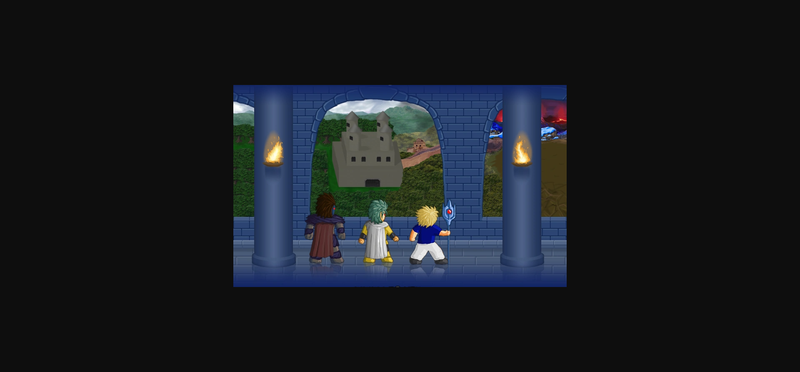
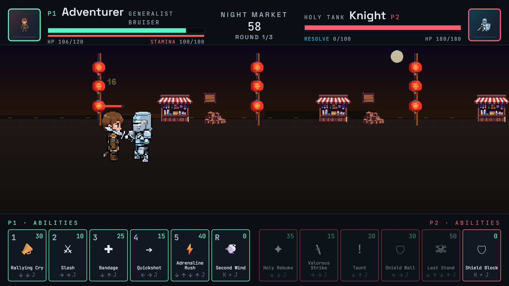
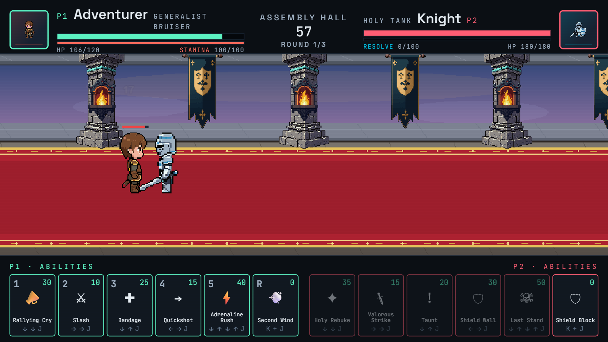

LF2 structure vs what we built — and how to fix it



The rug and floor look great. The pillars and banners have the right idea but are too sparse — the wall between them is just a plain colour gradient. In LF2 the wall behind pillars would be a continuous brick/stone texture.
TileSprite to repeat this image across the full 4000px world width at the horizon band| Stage | Wall backdrop tile (~400×200px) | Horizon strip (~400×24px) |
| Assembly | Stone wall with torch sconces + heraldic banner panels | Stone ledge / carpet edge |
| Night Market | Dense market shopfronts with hanging lanterns, signs, goods | Cobblestone kerb |
| Rot-Kitchen | Dark brick wall with ovens, hooks, pipes | Flagstone base |
| Mage Tower | Arcane stone wall with rune panels, crystal sconces | Glass floor edge with rune glow |
| Grove | Dense moonlit forest treeline with glowing undergrowth | Grass + root edge |
| Catacombs | Cave stone wall with stalactites, dripping water, skull niches | Wet stone lip |
| Red Throne | Crimson stone wall with arched windows, iron torch brackets | Dark stone slab edge |
| Docks | Foggy harbour — weathered timber warehouse wall, dock ropes | Dock plank edge |
| Rooftops | Distant rooftop silhouettes + pale dawn sky band | Slate tile edge |